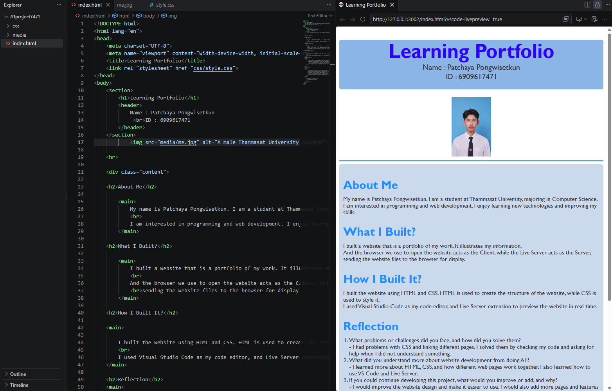
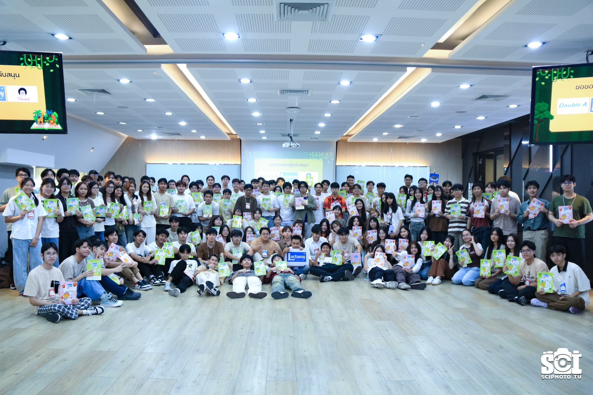

My Portfolio

CS100 A1:My First Learning Portfolio
- Type: Course Assignment
- Date: 30 Aug 2026
- Role: Individual Developer
- Description: Developing Learning Portfolio
- Skills: HTML, CSS, Semantic HTML
- Reflection:
Reflection
Learning HTML and CSS has helped me understand how to create and design websites. I learned how to
structure web pages using HTML and style them using CSS. I also learned how to arrange images, text,
and other elements to make a website look more organized and attractive. This experience improved my
problem-solving skills and made me more interested in web development.

[COM]Scifari
- Type: Activity
- Date: 10 Aug 2026
- Role: Participant
- Description: Freshman Welcome Activity
- Skills: Participation, Teamwork, Communication
- Reflection:
Participating in the Freshman Welcome Activity gave me an opportunity to meet new people and build
good relationships with my friends. I learned how to communicate and work together with others. This
activity also helped me become more confident and adapt to a new environment.